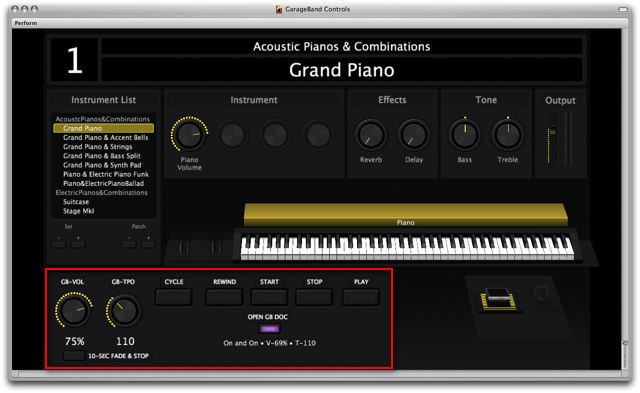
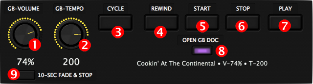

The MainStage GarageBand Controller
A popular use of GarageBand amongst musicians who perform live engagements, is to use it as a virtual backing band. GarageBand makes an excellent accompianment tool and offers many advantages over playing along with recorded audio backing tracks, specifically:
- Individual tracks, such as the track assigned for playing the melody, can easily be muted or soloed.
- GarageBand’s cycle controls can be used to repeat or loop specific sections of a song, allowing for adjustable arranagements for live performance.
- Song tempos can be adjusted without altering the pitch or key of the song.
In addition to GarageBand, the MainStage module from the Logic Pro suite of audio tools, has become a popular live-performance controller for delivering an infinite variety of virtual instruments and settings. However, it has always been problematic to use GarageBand and MainStage together, as it necessitates the computer be readily available to allow switching between the two applications.
With AppleScript and the MainStage GarageBand Controller layout view, this problem has been solved. It is now possible to load and controll GarageBand from within MainStage and even from your MIDI devices!

(above) A MainStage layout containing the GarageBand Controller (outlined in red).
The GarageBand Controller Interface
The MainStage GarageBand Controller has options for adjusting and controlling key playback features of GarageBand. Like many of the MainStage layout items, most of these controls can be assigned to be triggered by switches, pans, or keys on your MIDI keyboard or interface.

- Master Volume • This control will interactively adjust the master volume slider of the frontmost GarageBand project.
- Tempo • This control will interactively adjust the tempo of the frontmost GarageBand project. For smoothest results, stop the playback of the project before changing the settings of this control.
- Cycle Mode • Triggering this button will display a list dialog for switching the cycle mode of the front GarageBand project, on or off.
- Rewind • Triggering this button will cause the playback cursor of the front GarageBand project to be set to the beginning. If the project is currently playing, it will continue to play.
- Start • Triggering this button will cause the front GarageBand project to play from its beginning.
- Stop • Triggering this button will cause the front GarageBand project to stop playing. The playback cursor will remain at its current place on the timeline.
- Play/Resume • Triggering this button will cause the front GarageBand project to play from the current position of the playback cursor.
- Open Project • Triggering this button will display a list dialog for selecting the GarageBand project file to open. Initially, the dialog will display the top level contents of the GarageBand folder in the Music folder in your Home directory. The sub-folder heirarchy of the GarageBand folder can be naviagated to locate files orgainized in directories.
Once a file is chosen, any currently open GarageBand project will be automatically close without saving, and the new project opened. The name of the project and the value of its volume and tempo controls will be displayed below this MainStage button. - Fade and Stop • Triggering this button will cause the front GarageBand project to play for 10 seconds before it is stopped. During this 10-second period, the Master Volume slider will be gradually moved to 0.
Installation
First, watch the movie linked above in the sidebar, to see how to add and use the GarageBand Controller template with your MainStage projects. Next, download and run the scripts and MainStage template installers available here.